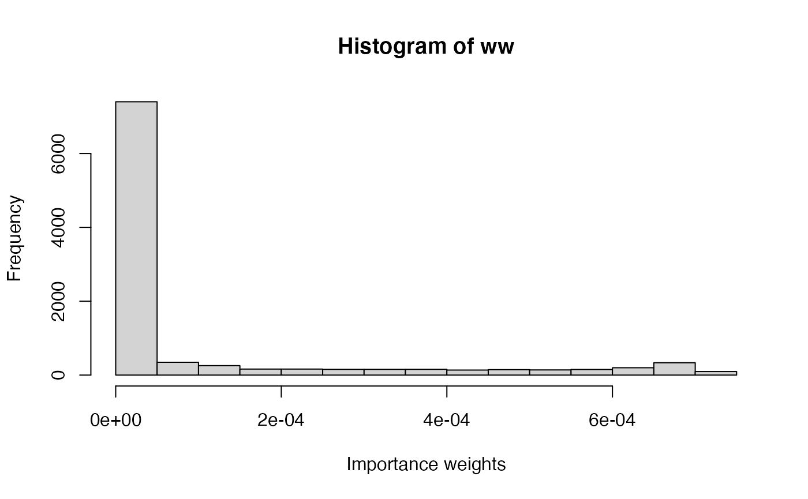
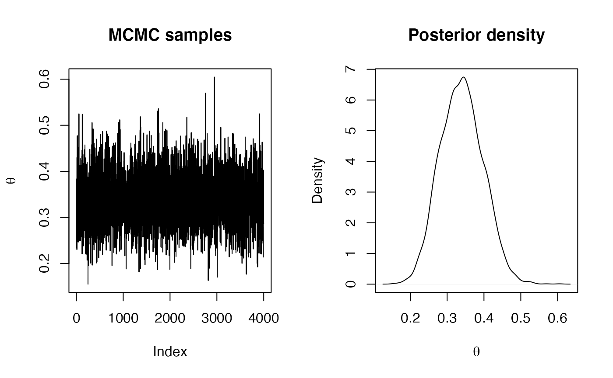
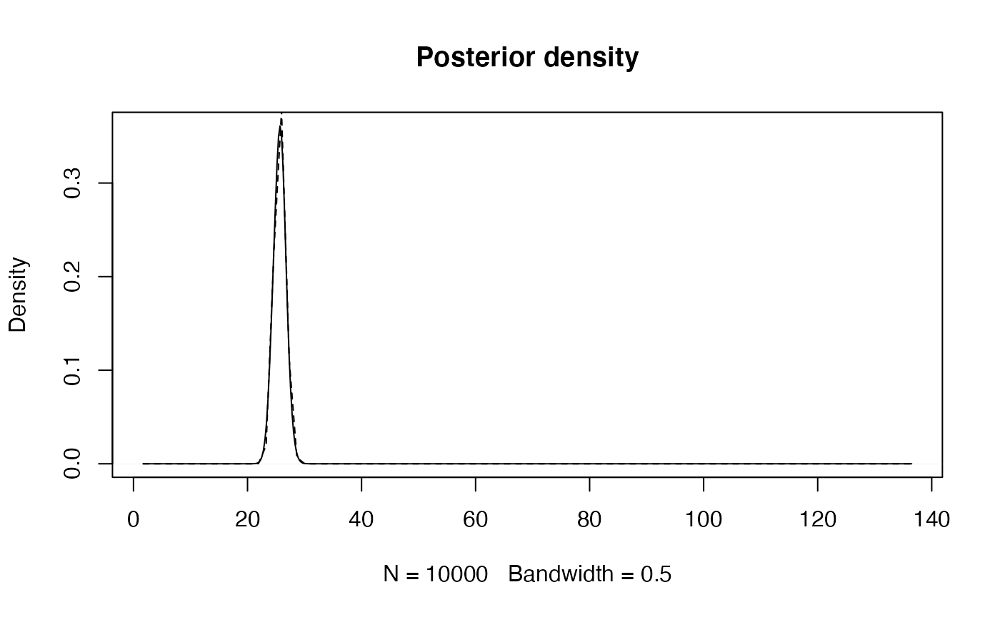
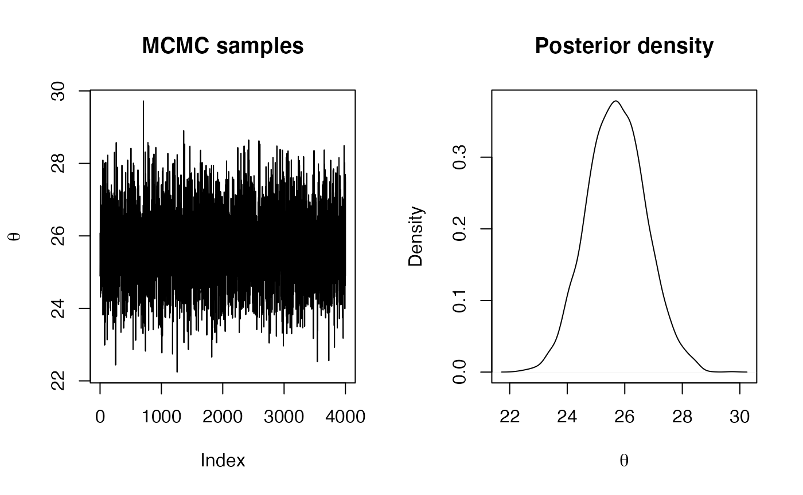

In previous practicals you have used Bayesian models with conjugate priors where the posterior distribution can be easily worked out. In general, this is seldom the case and other approaches need to be considered. In particular, Importance Sampling and Markov Chain Monte Carlo (MCMC) methods can be used to draw samples from the posterior distribution that are in turn used to obtain estimates of the posterior mean and variance and other quantities of interest.
As described in the previous lecture, Importance Sampling (IS) is an algorithm to estimate some quantities of interest of a target distribution by sampling from a different (sampling) distribution and reweighting the samples using importance weights. In Bayesian inference, IS can be used to sample from the posterior distribution when the normalizing constant is not known because
\[ \pi(\theta \mid \mathcal{D}) \propto f(\mathcal{D} \mid \theta) \pi(\theta) , \] where \(\mathcal{D}\) represents the observed data, \(f(\mathcal{D} \mid \theta)\) the likelihood function and \(\pi(\theta)\) the prior distribution on \(\theta\).
If \(g(\cdot)\) is a sampling distribution, and \(\{\theta^{(i)}\}_{i=1}^n\) are \(n\) samples from that distribution, then the importance weights are
\[ w_m = \frac{\pi(\theta^{(m)} \mid \mathcal{D})}{g(\theta^{(m)})} \propto \frac{f(\mathcal{D} \mid \theta^{(m)}) \pi(\theta^{(m)})}{g(\theta^{(m)})} . \] When the normalizing constant in the posterior distribution is not known, the importance weights are re-scaled to sum to one.
Hence, the posterior mean can be computed as
\[ \mu = \int \theta \pi(\theta \mid \mathcal{D}) d\theta \simeq \sum_{m=1}^n \theta^{(m)} w_m = \hat{\mu}. \] Similarly, the posterior variance can be computed as
\[ \sigma^2 = \int (\theta - \mu)^2 \pi(\theta \mid \mathcal{D}) d\theta \simeq \sum_{m=1}^n (\theta^{(m)})^2 w_m - (\hat{\mu})^2 . \]
The Metropolis-Hastings (M-H) algorithm is a popular MCMC method to obtain samples from the posterior distribution of an ensemble of parameters. In the examples below we will only consider models with one parameter, but the M-H algorithm can be used on models with a large number of parameters.
The M-H algorithm works in a very simple way. At every step of the algorithm a new movement is proposed using a proposal distribution. This movement is accepted with a known probability, which implies that the movement can be rejected so that the algorithm stays at the same state in the current iteration.
Hence, in order to code the M-H algorithm for a set of parameters \(\theta\) we need to define:
From the Bayesian model, we already know:
A prior distribution on the parameters of interest, i.e., \(\pi(\theta)\).
The likelihood of the data \(\mathcal{D}\) given \(\theta\), i.e, \(f(\mathcal{D}|\theta)\).
At step \(i\), a new value is drawn from \(q(\cdot|\theta^{(i)})\) and it is accepted with probability:
\[ \alpha = \min\left\{1, \frac{f(\mathcal{D}|\theta^*)\pi(\theta^{*})q(\theta^{(i)}|\theta^{*})}{f(\mathcal{D}|\theta^{(i)})\pi(\theta^{(i)})q(\theta^{*}|\theta^{(i)})}\right\} \]
If the value is accepted, then the current state is set to the proposed value, i.e., \(\theta^{(i+1)} = \theta^{*}\). Otherwise we keep the previous value, so \(\theta^{(i+1)} = \theta^{(i)}\).
The first example that will be considered is based on the data set collected on the number of red M&M’s in tube \(i\) with \(n_i\) M&M’s. The number of red M&M’s obtained depends on the total number of M&M’s extracted and the actual proportion of red ones \(\theta\). Given the proportion \(\theta\), the number of red M&M’s obtained follows a Binomial distribution. Because \(\theta\) takes values between 0 and 1, a sensible choice for a prior is the Beta distribution.
The model can be stated as follows:
\[ \begin{array}{rcl} y_i \mid \theta & \sim & Bi(n_i, \theta)\\ \theta & \sim & Be(\alpha, \beta) \end{array} \] to allow for multiple tubes \(i\).
In particular, we will consider a vague uniform prior in the \([0,1]\) interval, which corresponds to \(\alpha=\beta=1\).
You can use the following data set for this exercise:
data <- data.frame(MMs = c(20, 22, 24), red = c(5, 8, 9))These data reproduce different counts of red M&M’s in three different tubes. Variable MMs records the total number of M&M’s \(n_i\) in tube \(i\) and red the actual number of red M&M’s (\(y_i\) in the model).
Although the posterior distribution is known in closed form, IS can be used to estimate the posterior mean and variance. Given that the parameter \(\theta\) is bounded, a uniform distribution in the interval \([0,1]\) will be used. This is probably not very efficient (as it is likely not to be close to the actual posterior) but it will provide a straightforward simulation strategy.
Next, importance weights are computed in two steps. First, the ratio between the likelihood times the prior and the density of the sampling distribution is computed. Secondly, weights are re-scaled to sum to one.
# Log-Likelihood (for each value of theta_sim)
loglik_binom <- sapply(theta_sim, function(THETA) {
sum(dbinom(data$red, data$MMs, THETA, log = TRUE))
})
# Log-weights: log-lik + log-prior - log-sampling_ditr
log_ww <- loglik_binom + dbeta(theta_sim, 1, 1, log = TRUE) - log(1)
# Re-scale weights to sum up to one
log_ww <- log_ww - max(log_ww)
ww <- exp(log_ww)
ww <- ww / sum(ww)Importance weights can be summarized using a histogram (see below). The distribution of weights shows that most samples are far from the regions of high posterior density.
hist(ww, xlab = "Importance weights")
The posterior mean and variance can be computed as follows:
# Posterior mean
post_mean <- sum(theta_sim * ww)
post_mean ## [1] 0.3376749
# Posterior variance
post_var <- sum(theta_sim^2 * ww)- post_mean^2
post_var## [1] 0.003288748Finally, an estimate of the posterior density \(\pi(\theta \mid \mathcal{D})\) of the parameter can be obtained by using weighted kernel density estimation:
plot(density(theta_sim, weights = ww, bw = 0.01), main = "Posterior density")
curve(dbeta(x, sum(data$red) + 1, sum(data$MMs) -sum(data$red) + 1), lty = 2, add = TRUE)Note that the value of the bandwidth used (argument bw) has been set manually so that both curves will match (as the default bandwidth provided a slightly different estimate of the posterior distribution) to enable a fair comparison.
As stated above, the implementation of the M-H algorithm requires a proposal distribution to obtain new values of the parameter \(\theta\). Usually, the proposal distribution is defined so that the proposed movement depends on the current value. However, in this case we will use a uniform distribution between 0 and 1 as our proposal distribution.
First of all, we will define the proposal distribution, prior and likelihood of the model:
#Proposal distribution: sampling
rq <- function() {
runif(1)
}
#Proposal distribution: log-density
logdq <- function(x) {
dunif(x, log = TRUE)
}
#Prior distribution: Beta(1, 1)
logprior <- function(theta) {
dbeta(theta, 1, 1, log = TRUE)
}
#Log-Likelihood
loglik <- function(y, theta, N) {
res <- sum(dbinom(y, N, theta, log = TRUE))
}Note that all densities and the likelihood are computed on the log-scale.
Next, the implementation of the M-H algorithms is as follows:
#Number of iterations
n.iter <- 40500
#Simulations of the parameter
theta <- rep(NA, n.iter)
#Initial value
theta[1] <- 0.5
#Data
y <- data$red
N <- data$MMs
for(i in 2:n.iter) {
new.theta <- rq()
#Log-Acceptance probability
logacc.prob <- loglik(y, new.theta, N) + logprior(new.theta) + logdq(theta[i - 1])
logacc.prob <- logacc.prob - loglik(y, theta[i - 1], N) - logprior(theta[i - 1]) -
logdq(new.theta)
logacc.prob <- min(0, logacc.prob) # Note that 0 = log(1)
if(log(runif(1)) < logacc.prob) {
#Accept
theta[i] <- new.theta
} else {
#Reject
theta[i] <- theta[i - 1]
}
}We will remove the first 500 iterations as burn-in, and thin the simulations to keep one in 10 to reduce autocorrelation. After that, we will compute summary statistics and display a density of the simulations:
#Remove burn-in
theta <- theta[-c(1:500)]
#Thinning
theta <- theta[seq(1, length(theta), by = 10)]
#Summary statistics
summary(theta)## Min. 1st Qu. Median Mean 3rd Qu. Max.
## 0.1734 0.3012 0.3388 0.3395 0.3762 0.5369
par(mfrow = c(1, 2))
plot(theta, type = "l", main = "MCMC samples", ylab = expression(theta))
plot(density(theta), main = "Posterior density", xlab = expression(theta))The sampling distribution plays a crucial role in IS and it should be as close to the posterior as possible. As a way of measuring how good a sampling distribution is, it is possible to compute the effective sample size as follows:
\[ ESS = \frac{(\sum_{m=1}^n w_m)^2}{\sum_{m=1}^n w^2_m}. \]
Compute the effective sample size for the previous example. How is this related to the number of IS samples (n_simulations)?
Use a different sampling distribution and check how sampling weights, ESS and point estimates differ from those in the current example. For example, a Beta(20, 10) will put more mass on high values of \(\theta\), unlike the actual posterior distribution. What differences do you find with the example presented here using a uniform sampling distribution? Why do you think that these differences appear?
Use the posterior distribution (which for this particular case is known in a closed form) as the sampling distribution.
What is the distribution of the importance weights now?
Compute the effective sample size. How large is it? Why do you think this happens?
IS and M-H are algorithms that can be used to make inference about \(\theta\) when the posterior density of the parameter is not available in closed form. This is the case with models which have non-conjugate priors. As an exercise, try to obtain the posterior density of the same model with the following non-conjugate prior:
\[ \pi(\theta) \propto (1-\theta)^2;\ \theta\in[0,1]. \]
This prior has the following shape:
xx <- seq(0, 1, by = 0.01)
plot(xx, (1 - xx)^2, type = "l", xlab = expression(theta),
ylab = expression(theta^2))
The interpretation of this prior is that higher values are favoured over smaller values, i.e., our prior information is that the parameter is more likely to have values close to 0 than values close to 1.
Note that the prior is specified up to a normalizing constant (which in this case is not difficult to compute). However, this constant is not needed to implement both IS and M-H. In the case of IS, the constant will cancel when the weights are re-scaled to sum to one and in the case of the M-H the constant will cancel when the acceptance ratio is computed.
The second example will be based on the Game of Thrones data set. Remember that this is made of the observed number of u’s on a page of a book of Game of Thrones. The model can be stated as:
\[ \begin{array}{rcl} y_i \mid \lambda & \sim & Po(\lambda)\\ \lambda & \sim & Ga(\alpha, \beta) \end{array} \]
In particular, the prior on \(\lambda\) will be a Gamma distribution with parameters \(0.01\) and \(0.01\), which is centered at 1 and has a small precision (i.e., large variance).
We will denote the observed values by y in the R code. The data collected can be loaded with:
data <- data.frame(Us = c(25, 29, 27, 27, 25, 27, 22, 26, 27, 29, 23, 28, 25,
24, 22, 25, 23, 29, 23, 28, 21, 29, 28, 23, 28))
y <- data$UsNow the parameter of interest is not bounded, so the sampling distribution needs to be chosen with care. We will use a log-Normal distribution with mean 3 and standard deviation equal to 0.5. This will ensure that all the sampled values are positive (because \(\lambda\) cannot take negative values) and that the sample values are reasonable (i.e, they are not too small or too large). Note that this sampling distribution has been chosen having in mind the problem at hand and that it may not work well with other problems.
Next, importance weights are computed in two steps, as in the previous example. Note that now the likelihood, prior and sampling distribution are different from the ones in the binomial example.
# Log-Likelihood (for each value of lambda_sim)
loglik_pois <- sapply(lambda_sim, function(LAMBDA) {
sum(dpois(data$Us, LAMBDA, log = TRUE))
})
# Log-weights: log-lik + log-prior - log-sampling_ditr
log_ww <- loglik_pois + dgamma(lambda_sim, 0.01, 0.01, log = TRUE) - dlnorm(lambda_sim, 3, 0.5)
# Re-scale weights to sum up to one
log_ww <- log_ww - max(log_ww)
ww <- exp(log_ww)
ww <- ww / sum(ww)Importance weights can be summarized using a histogram:
hist(ww, xlab = "Importance weights")The posterior mean and variance can be computed as follows:
# Posterior mean
post_mean <- sum(lambda_sim * ww)
post_mean## [1] 25.64101
# Posterior variance
post_var <- sum(lambda_sim^2 * ww)- post_mean^2
post_var## [1] 0.9941769Finally, an estimate of the posterior density of the parameter can be obtained by using weighted kernel density estimation:
plot(density(lambda_sim, weights = ww, bw = 0.5) , main = "Posterior density")
curve(dgamma(x, sum(data$Us) + 0.01, length(data$Us) + 0.01), lty = 2, add = TRUE)
Note that the value of the bandwidth used (argument bw) has been set manually so that both curves will match (as the default bandwidth provided a slightly different estimate of the posterior distribution) to enable a fair comparison.
Similarly to the previous example, we will set the proposal distribution, as the model has been fully defined above. In this case, the proposal distribution is a log-Normal distribution centered at the logarithm of the current value with precision 100.
#Proposal distribution: sampling
rq <- function(lambda) {
rlnorm(1, meanlog = log(lambda), sdlog = sqrt(1 / 100))
}
#Proposal distribution: log-density
logdq <- function(new.lambda, lambda) {
dlnorm(new.lambda, meanlog = log(lambda), sdlog = sqrt(1 / 100), log = TRUE)
}
#Prior distribution: Ga(0.01, 0.01)
logprior <- function(lambda) {
dgamma(lambda, 0.01, 0.01, log = TRUE)
}
#LogLikelihood
loglik <- function(y, lambda) {
res <- sum(dpois(y, lambda, log = TRUE))
}With these definitions we can actually use the same implementation of the M-H that we have used in the previous section.
#Number of iterations
n.iter <- 40500
#Simulations of the parameter
lambda <- rep(NA, n.iter)
#Initial value
lambda[1] <- 30
for(i in 2:n.iter) {
new.lambda <- rq(lambda[i - 1])
#Log-Acceptance probability
logacc.prob <- loglik(y, new.lambda) + logprior(new.lambda) +
logdq(lambda[i - 1], new.lambda)
logacc.prob <- logacc.prob - loglik(y, lambda[i - 1]) - logprior(lambda[i - 1]) -
logdq(new.lambda, lambda[i - 1])
logacc.prob <- min(0, logacc.prob)#0 = log(1)
if(log(runif(1)) < logacc.prob) {
#Accept
lambda[i] <- new.lambda
} else {
#Reject
lambda[i] <- lambda[i - 1]
}
}The same burn-in and thinning as in the Beta-Binomial example will be used. Furthermore, summary statistics and plots will be computed now:
#Remove burn-in
lambda <- lambda[-c(1:500)]
#Thinning
lambda <- lambda[seq(1, length(lambda), by = 10)]
#Summary statistics
summary(lambda)## Min. 1st Qu. Median Mean 3rd Qu. Max.
## 22.24 25.02 25.70 25.71 26.40 29.72
par(mfrow = c(1, 2))
plot(lambda, type = "l", main = "MCMC samples", ylab = expression(lambda))
plot(density(lambda), main = "Posterior density", xlab = expression(lambda))
Similarly to the exercises in the example on binomial data, you will now assess the impact of the sampling distribution on the inference process.
Compute the effective sample size for the previous example. How is this related to the number of IS samples (n_simulations)?
Use a different sampling distribution and check how sampling weights, ESS and point estimates differ from those in the current example. For example, a Ga(5, 0.1) will put a higher mass on values around 40, unlike the actual posterior distribution. What differences do you find with the example presented here using a uniform sampling distribution? Why do you think that these differences appear?
Use the posterior distribution (which for this particular case is known in a closed form) as the sampling distribution.
How large are the weights now?
Compute the effective sample size. How large is it? Why do you think this happens?
Just as in the binomial example, non-conjugate priors can be used for the \(\lambda\) parameter. In this case, given that \(\lambda\) is positive, care must be taken when choosing the prior. For this exercise, try to use a log-Normal prior with mean 4 and standard deviation 1. This will provide a prior of \(\lambda\) as seen in the next plot:
Hence, with this prior small values of the average number of u’s are given a higher prior density.
A model with this prior can be estimated using IS and M-H algorithms.